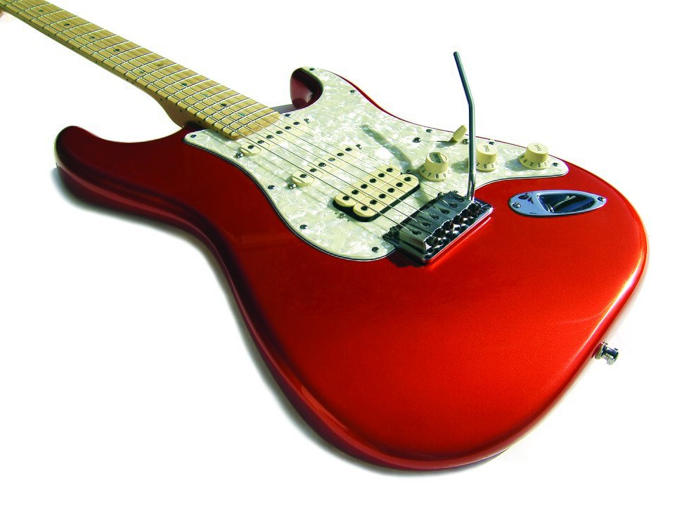

Birebir derslerle tekniği, müzik teorisini ve sevdiğin şarkıları birlikte çalışıyoruz. Hiç başlamamış olsan da, yıllardır çalıyor olsan da sana uygun bir yol çizebiliriz.
Deneme dersi için yazDerslerde neler var?
Teknik ve ritim
Doğru duruş, pena tekniği, temiz akor geçişleri ve ritim çalışmaları.
Müzik teorisi
Aralıklar, gamlar ve akorlar. Ezberlemek yerine mantığını anlayarak.
Sevdiğin şarkılar
Her seviyede, senin dinlediğin ve çalmak istediğin parçalar.
Haftalık çalışma planı
Her dersin sonunda o haftaya özel kısa ödevler.
Nasıl başlıyoruz?
Tanışma dersi
Seviyeni ve hedeflerini konuşuyoruz.
Sana özel plan
Neye, hangi sırayla çalışacağımızı belirliyoruz.
Haftalık dersler
Düzenli ders ve ödevlerle adım adım ilerliyoruz.
Ders seçenekleri
Yüz yüze
Birebir, aynı ortamda ders.
Online (Çok yakında)
Görüntülü görüşmeyle, bulunduğun yerden.
Ücret ve uygun saatler için iletişime geçebilirsin.
Hakkımda
Altı yaşında piyanoyla müziğe başladım, on iki yaşından beri gitar çalıyorum. Asıl mesleğim mühendislik, ancak gitarı hiç bırakmadım. Müzik hayatım boyunca pop, rock, blues ve metal gibi farklı tarzlarda çaldım. Bu deneyimim sayesinde öğrencilerime yalnızca egzersiz veya parça öğretmek değil, kendi müzik zevklerine ve hedeflerine uygun bir gelişim süreci sunmak benim için daha önemli hale geldi.